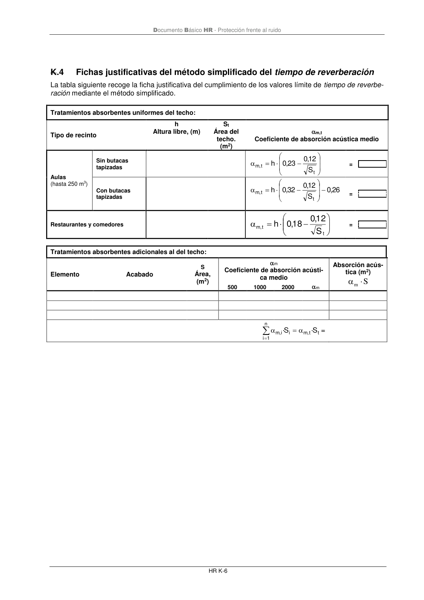

DB-HR Protección frente al ruido · edición 2019-12-20 · capa oficial
Documento DB-HR-oficial · SHA-256 del PDF a67baeca5138bb1f121f797d23a79a4557bd9ac4abacd954024893e05411eeab
Copia fiel del PDF fuente · Fuente oficial
Ficha de la disposición en la fuente oficial
Formatos: JSON del segmento · Markdown
absorción acústica La tabla siguiente recoge la ficha justificativa del cumplimiento de los valores límite de tiempo de reverbe- ración y de absorción acústica mediante el método de cálculo Tipo de recinto:.................................................................................... Volumen, V (m3): Elemento Acabado S Área, (m2) m Coeficiente de absorción acústi- ca medio Absorción acús- tica (m2) S m 500 1000 2000 m Suelo Techo Paramentos Objetos(1) Tipo Área de absorción acústica equi- valente media, m , O A (m2) N A m , O 500 1000 2000 m , O A Absorción aire (2) Coeficiente de atenuación del aire, m m (m-1) V mm 4 500 1000 2000 m m 0,003 0,005 0,01 0,006 A, (m2) Absorción acústica del recinto resultante V m A S A m N j j m O n i i i m + + = = = 4 · 1 , , 1 , T, (s) Tiempo de reverberación resultante A V 16 ,0 T= Absorción acústica resultante de la zona común Absorción acústica exigida A (m2)= ≥ =0,2·V Tiempo de reverberación resultante Tiempo de reverberación exigido T (s)= ≤ (1) Sólo para salas de conferencias de volumen hasta 350 m3 (2) Sólo para volúmenes mayores a 250 m3 Documento Básico HR - Protección frente al ruido HR K-6
